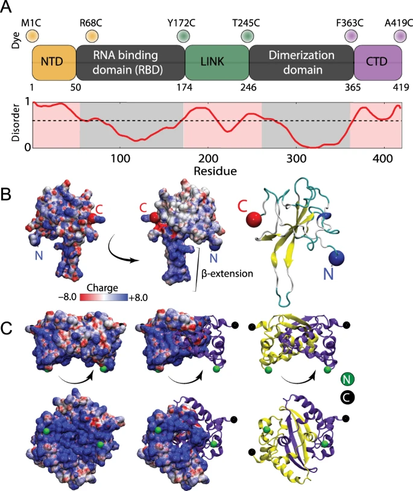
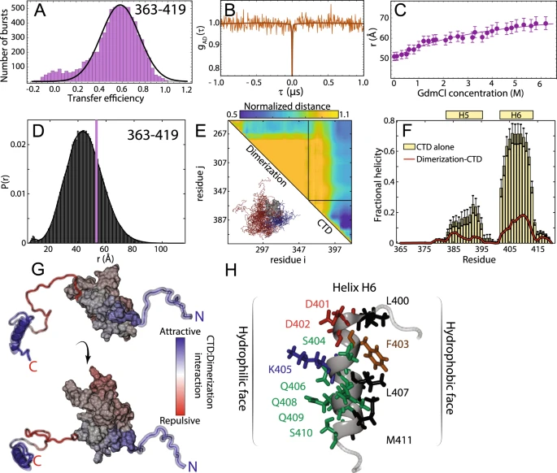
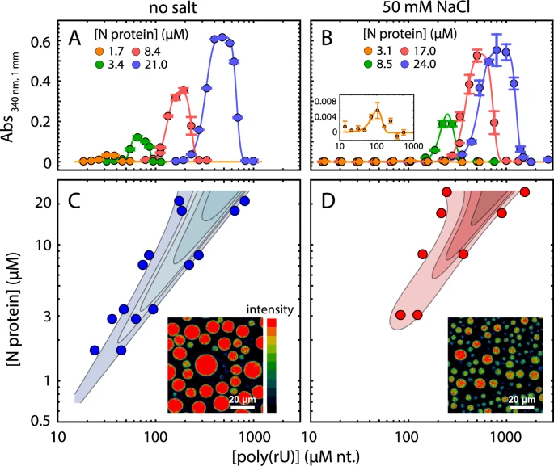
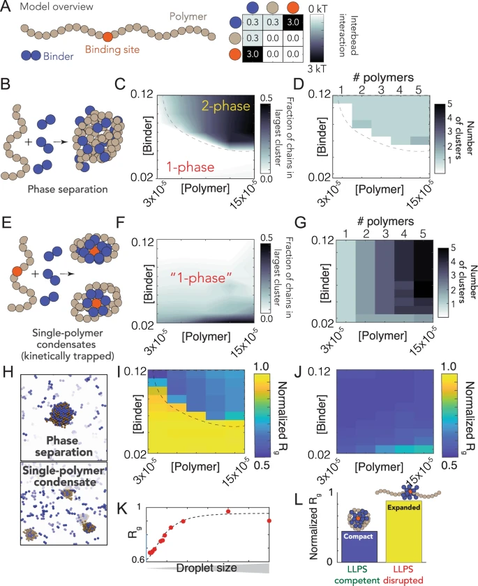

Nucleocapsid (N) Protein
Function and RNA Binding
The Nucleocapsid (N) protein is the primary RNA-binding structural protein of SARS-CoV-2. It binds genomic and subgenomic RNAs, assists with replication and packaging, and interacts with multiple host factors. N has modular RNA-binding domains separated by intrinsically disordered regions (IDRs) that mediate multivalent interactions with RNA and other proteins.
Liquid–Liquid Phase Separation (LLPS)
Recent biochemical and cellular studies show that the SARS-CoV-2 N protein undergoes liquid–liquid phase separation in the presence of RNA and certain host ribonucleoproteins. This phase separation is thought to underlie the formation of replication/transcription condensates and the selective packaging of viral genomes into assembling virions. The IDR-rich linkers and multivalent RNA contacts produce concentration- and RNA-dependent condensates with properties that can influence viral assembly and transcriptional control.
Biophysical and Functional Implications
- Genome Condensation: N-mediated condensates can compact long viral RNAs, promoting efficient packaging.
- Replication Compartments: Phase-separated assemblies may scaffold replication-transcription complexes and concentrate polymerase factors.
- Regulatory Potential: Differential RNA sequences and modifications can tune condensate properties, linking RNA sequence/structure to N-driven mesoscale organization.
Representative Figures
The panels below illustrate key N-protein properties: domain architecture and intrinsic disorder, RNA-driven phase separation, condensate dynamics and RNA compaction, and a mechanistic model linking domain features with genome packaging (see Cubuk et al., 2021).




Key findings from selected studies
Savastano et al. demonstrated that the N protein forms RNA-rich condensates that recruit polymerase components and other host factors, suggesting a role for N-driven assemblies in concentrating replication machinery and promoting efficient genome replication.
Dinesh et al. solved structures of the N-terminal RNA-binding domain and the C-terminal dimerization domain, identifying RNA-contact surfaces and oligomerization interfaces that underpin sequence recognition and ribonucleoprotein assembly.
Cubuk et al. combined disorder mapping, phase-diagram measurements, and live-cell imaging to show that N's intrinsically disordered regions and multivalent RNA interactions drive phase separation, and proposed a mechanistic model for how these properties enable selective genome compaction and packaging.
Wang et al. provide evidence that perturbing N phase separation alters innate immune signalling via MAVS, indicating that N-driven condensates can modulate host responses and therefore may influence viral fitness and immune evasion.
Selected References
- Savastano, A., Ibáñez de Opakua, A., Rankovic, M., & Zweckstetter, M. Nucleocapsid protein of SARS-CoV-2 phase separates into RNA-rich polymerase-containing condensates. Nat Commun 11, 6041 (2020). https://doi.org/10.1038/s41467-020-19843-1
- Dinesh, D. C., Chalupska, D., Silhan, J., et al. Structural basis of RNA recognition by the SARS-CoV-2 nucleocapsid phosphoprotein. PLoS Pathog 16(12): e1009100 (2020). https://doi.org/10.1371/journal.ppat.1009100
- Cubuk, J., et al. The SARS-CoV-2 nucleocapsid protein is dynamic, disordered, and phase separates with RNA. Nat Commun 12, 1936 (2021). https://doi.org/10.1038/s41467-021-21953-3
- Wang, S., et al. Targeting liquid-liquid phase separation of SARS-CoV-2 nucleocapsid protein promotes innate antiviral immunity by elevating MAVS activity. Nat Cell Biol 23, 718-732 (2021). https://doi.org/10.1038/s41556-021-00710-0